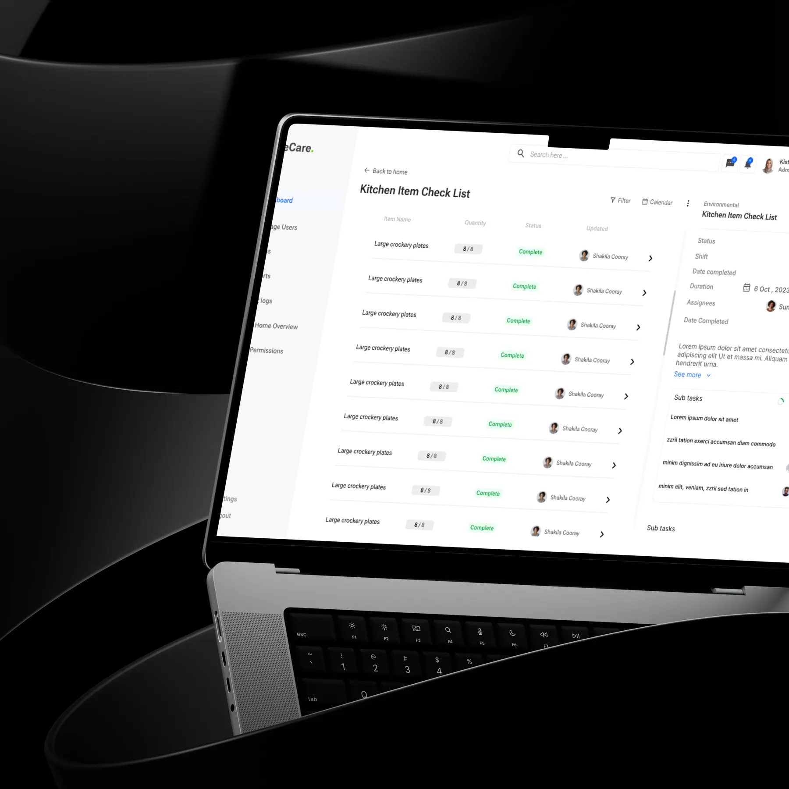

Active Care.
One calm system for a high-pressure job. Designing care home software for nurses, carers and managers in the UK.

The problem
Care homes juggled resident records, medication, incidents and rosters across scattered tools, while staying compliant with UK regulations.
The solution
A centralised, role-based system. Each role sees its priority tasks first, on accessible, high-contrast screens built from one design system.
The impact
Fewer errors
The client reported smoother daily operations and fewer errors in medication processes.
I ran requirements meetings with UK stakeholders, mapped user journeys, designed the UI in Figma, built the design system and supported developers so components shipped as designed.
Design around roles, not modules. A nurse, a carer and a manager open the same system and see different priorities.
Multi-home management for administrators, nurses, carers and managers: residents, medication, compliance, incidents, scheduling and daily care notes.
The decisions behind the experience
See the interface. Follow the decision.
Start every shift with the right list
Each role lands on its own priority tasks.
Read the decision
Fewer taps for repeat work
Checklists replace free-text forms for routine checks.
Read the decisionResearch, exploration, and what I learned↓
Four roles. Sensitive data. No time to search for it.
Active Care needed one place to run several care homes. Administrators, nurses, carers and managers all used it, each with different priorities.
Care staff make time-sensitive decisions during busy shifts. They need resident details, medication schedules and incident forms in seconds, not after a hunt through menus.
In healthcare, a confusing screen can lead to a missed dose or an incomplete record. Clarity is a safety requirement.
- Several user roles with different priorities
- Readability on the floor, often on shared devices
- Documentation fatigue from repetitive daily logging
- Large volumes of sensitive resident data
One dashboard for everyone would have been simpler to build. It would have served no one well.
Each role starts its shift with a different question. A carer asks what needs doing now. A manager asks whether anything is at risk. A single shared home screen answered neither.
So the dashboards became role-driven, surfacing the right tasks first, while every module shared the same components underneath.
More views to maintain
Role-based screens mean more to design and keep in sync. A modular design system made that manageable for the developers.
Design for the busiest moment of the shift, not the average one.
What shaped the interface.
Role-driven dashboards
Each user lands on their own priority tasks, which cuts navigation during busy shifts.
Accessibility as the baseline
High-contrast type, large touch targets and clear status colours support readability in real care settings.
Structured logging
Checklists and structured forms for routine checks, such as kitchen items, reduce typing and documentation fatigue.
One modular design system
Reusable components kept every module consistent and made developer handover faster.
From requirements to a working model.
A calmer system for a high-pressure job.
The client reported improved daily operations, smoother care workflows and fewer errors in medication processes.
Figures describe the scope of the design work. Measured results will be added as they become available.
Sanjula Thilan transformed our complex care home workflows into a clean, intuitive, and highly efficient system that has significantly improved our daily operations.
Director, Active Care Organization, UK
In regulated environments, clarity is part of safety. I design for the worst moment of a shift, then make sure the calm moments still feel simple.